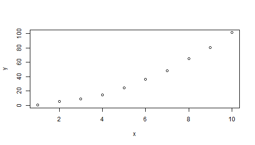
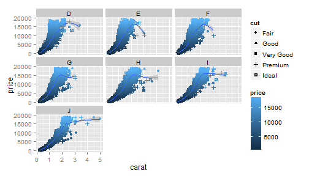
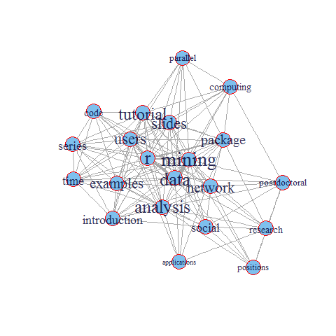

Joshua Kunst
Otra usuario más de R
Las opiniones vertidas en esta presentación son de exclusiva responsabilidad del autor de esta
y representan necesariamente el pensamiento del mismo.
Lo básico
Lo no tan básico
Lo quizás avanzado
Donde podemos ver R en acción?
5 + 5
## [1] 10
v <- c(1, 2, 3)
t <- seq(1, 7, by = 3)
v * t
## [1] 1 8 21
tabla <- data.frame(columna1 = c("hola", "que", "hace?"),
otra_columna = c(3,4,5))
str(tabla)
## 'data.frame': 3 obs. of 2 variables:
## $ columna1 : Factor w/ 3 levels "hace?","hola",..: 2 3 1
## $ otra_columna: num 3 4 5
Distintas tipos de fuentes, texto, excel, motores de bases de datos como myslq, etc! ;)
x <- 1:10
y <- x^2 + rnorm(length(x))
plot(x, y)

ggplot(data = diamonds) + geom_point(aes(x = carat, y = price, color = price,
shape = cut)) + geom_smooth(aes(x = carat, y = price)) + facet_wrap(~color)

M <- gvisMotionChart(Fruits, "Fruit", "Year", options = list(width = 500, height = 300))
bar <- nvd3Plot( ~ day | sex, data = tips, type = 'multiBarChart', width=800, height=300)

An Example of Social Network Analysis with R using Package igraph